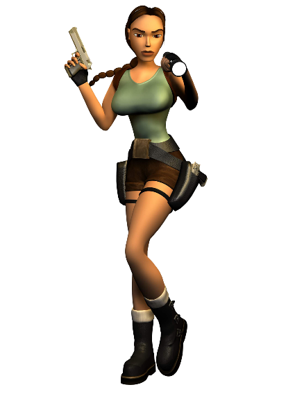
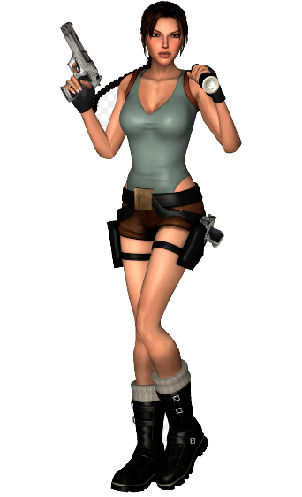
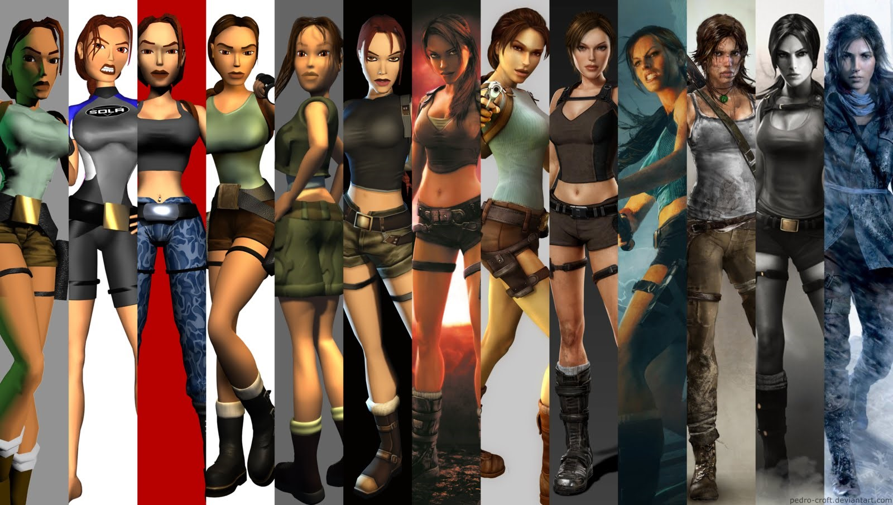

Lara Croft (Tomb Raider 1996)
Core Design & Crystal Dynamics
 Enfin en 1996 arrive le personnage emblématique qu’est Lara Croft dans le jeu Tomb Raider de Square Enix. Cette femme bien connue du XXIème siècle et symbole d'une représentation active et puissante de la femme peut être l’objet de critiques.  Même si ce personnage incarne la représentation la plus connue de la féminité dans les jeux vidéo, il faut savoir qu’au départ ce personnage a été créé pour un public masculin. En effet, cela ne l’empêche pas d’être sexualisée: vêtements courts et sexy, mensurations exagérées etc. En 1997, Toby Gard dit la vérité sur la taille de la poitrine de Lara : - "Ma souris a glissé. J'ai voulu les augmenter de 50% et oups, 150%, zut ! Par la suite, nous nous sommes concentrés sur ce trait car l'équipe marketing y a juste vu une bonne façon d'entamer la campagne."
On comprend bien que la morphologie de Lara, bien que hasardeuse, se trouve être une stratégie marketing et un atout afin de la placer sous le « male gaze » (Le regard masculin).
 En conclusion, on a souvent reproché à cette héroïne d’avoir été conçue au départ pour plaire à un public masculin. Mais Lara a bien changé au fil des années. Dans ses derniers jeux, on retrouve une jeune femme à l’anatomie un peu plus logique et à l’histoire plus étudiée. En effet, ce n’est qu’à partir de 2013 que Lara est totalement remodelées afin de montrer un modèle plus réaliste de la femme c’est-à-dire un personnage habillé avec des formes moins généreuses, forte mais surtout HUMAINE.